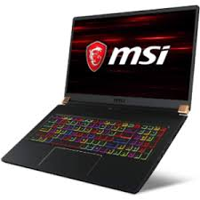

Laptop Asus VivoBook X507UF i7 8550U/4GB/1TB/2GB MX130/Win10 (EJ074T)
Đặc điểm nổi bật của Asus VivoBook X507UF i7 8550U/4GB/1TB/2GB MX130/Win10 (EJ074T)
Làm việc và giải trí thường ngày với chiếc laptop Asus X507UF i7 8550U chip Intel Core i7, bộ nhớ Ram dung lượng 4 GB. Đúng với tên gọi máy tính xách tay của nó, X507UF i7 8550U chỉ nặng 1.8 kg dễ dàng để bạn có thể mang đi khắp nơi.
Thiết kế gọn nhẹ, năng động
Laptop Asus có kích thước không quá lớn, trọng lượng chỉ có 1.8 kg thì việc cho sản phẩm vào balo và mang theo bên mình là vô cùng đơn giản.
Bạn có thể học tập và làm việc ở bất kì nơi đâu mà không còn phải e ngại về vấn đề cân nặng của chiếc máy nữa.

Thông số kỹ thuật
CPU: Intel Core i7 Coffee Lake, 8550U, 1.80 GHz
RAM: 4 GB, DDR4 (2 khe), 2400 MHz
Ổ cứng: HDD: 1 TB SATA3, Hỗ trợ khe cắm SSD M.2
Màn hình: 15.6 inch, Full HD (1920 x 1080)
Card màn hình: Card đồ họa rời, NVIDIA Geforce MX130, 2GB
Cổng kết nối: 2 x USB 2.0, HDMI, USB 3.0
Hệ điều hành: Windows 10 Home SL
Thiết kế: Vỏ nhựa, PIN liền
Kích thước: Dày 21.9 mm, 1.8 kg
Thời điểm ra mắt: 2018